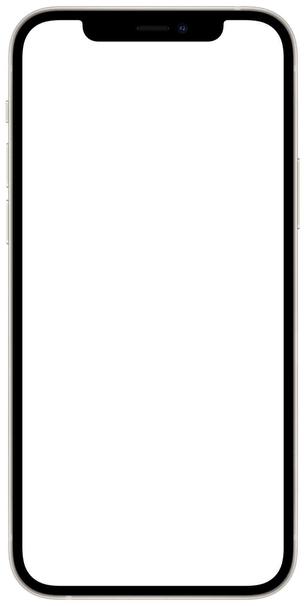

권승연의 약력
- 권승연은 2000년 3월, 대한민국 경기도 고양시(이제는 고양특례시이지만.) 출생이다.
- 유치원 시절에는 화가를, 초등학생 시절에는 디자이너와 건축가, 항공기 정비사를, 중학생 시절부터는 시각디자이너를 꿈꾸었다.
- 어렸을 적부터 하늘을 좋아했고 구름을 올려다보길 좋아했다. 어느 정도냐면... 유치원, 초등학교 때의 친구를 성인이 되고 우연히 길에서 마주쳤는데, 구름 사진을 찍는 사람이라서 권승연이라고 확신했다고 한다. 가끔은 위를 보고 걷다가 넘어질 뻔하기도 한다.
- 16살부터 홍익대학교 시각디자인과에 진학하고 싶어 학생부를 설계했다. 다행히 성공했다. 현재 홍익대학교 디자인학부 시각디자인전공 20학번으로, 3학년에 재학중이다.
- 소리를 기록하는 문자의 모양을 공부하길 좋아한다. 문자 체계, 문법 또한 좋아한다. 안타깝게도 문법만을 좋아하고, 문학에는 관심이 없다. 학문을 심하게 편식한다.
- 글자의 모양에 대한 관심으로 2022년, 홍익대학교 시각디자인과의 한글꼴연구회에 입단하여 활동한다.
- 2022년 여름, 한글꼴연구회의 '글자놀이터'전시에 참여했다. 곧 열릴 전시에 다시 참여한다.
- 2022년 여름, 방학 동안 김이홍 아키텍츠에서 인턴과 외주 사이의 일을 했다.
- 2021년 한 해 동안 홍익대학교 시각디자인과 학생회 '온돌'의 사무부원으로 일했다.
- 2021년 말, 제 31회 와우영상제의 운영팀, 회계팀으로 일했다.
- 2021년 말, 홍익대학교 시각디자인과 졸업준비위원회의 도우미로 일했다.
- 책을 디자인하는 일로 돈벌이를 시작했다.
- tmi : 2017년부터 고양이를 좋아하기 시작했다. 고양이를 상당히 좋아하지만 알러지가 있어, 밀폐된 공간에 함께 있는 상황에 기뻐하면서 괴로워한다.
처음의 방으로 돌아가고 싶다면...
약력에 대한 고민
약력에 대한 구홍의 PPT를 다시 읽어 보았다. 권승연은 약력 몇 줄로 사람들에게 어떻게 인식되길 바라는가? 구홍의 말씀대로, 누군가는 약력만으로 나를 인식하고, 오해하고, 나아가 나를 과연 자신의 추억 속에 간직할 만한지 판단하기도 한다. 누군가 나를 판단해야 하는 상황이라면, 그리고 그 누군가가 정말 누가 될지 알 수 없다면, 나는 무엇을 소개하고 싶을까? 내가 이제껏 생활해온 궤적은 무엇일까?